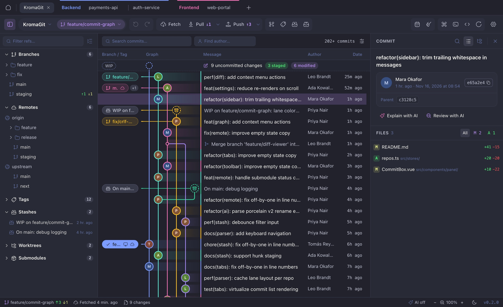
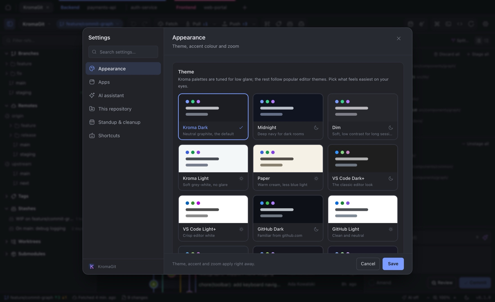

A graph that reads at a glance
Every branch keeps its lane and colour. Stashes and uncommitted work sit right in the timeline.
A fast, calm, local-first Git client. Read your history at a glance, stage exactly the lines you mean, and undo almost anything — with no account, no server and no telemetry.

Works with any Git remote
Features
All the Git you use every day, laid out so you can see what's happening before you click.
Every branch keeps its lane and colour. Stashes and uncommitted work sit right in the timeline.
Checkout, commit, discard, reset, delete a branch — undo and redo, safely.
Every action, branch and repository, a few keystrokes away.
Whole files, single hunks or just the lines you click. Inline or side by side, with changed words highlighted.
Coloured tab groups, drag to reorder, open submodules and worktrees in a click. KromaGit reopens where you left off.
Built with Tauri and Rust. It runs your real git, so it behaves exactly like the terminal.
Graph
Merges join where they really happen and every branch stays in its own lane, so even busy repositories with dozens of branches stay readable.

Changes
A diff viewer built for reading: word-level highlights, a change map down the side, and a view that remembers how you like it.

AI, on your terms
Run a local model with Ollama for free, or bring your own key for Claude, OpenAI or Gemini. Keys live in your system keychain, and nothing is sent without your say-so.
Themes
Five Kroma themes tuned for low glare, plus VS Code, GitHub, One Dark Pro, Tokyo Night, Catppuccin, Dracula, Nord and Ayu.


In the box
Free for everyone, on every desktop. It uses the git already on your computer.
On a Mac? macOS asks you to confirm KromaGit the first time. Here's how.
pnpm install && pnpm tauri build
Yes. KromaGit is MIT licensed with no paid tier, no account and no sign-in. AI features are optional; with Ollama they cost nothing, and with a cloud provider you pay that provider directly with your own key.
Not unless you turn on a cloud AI provider and confirm a request. KromaGit has no server and sends no telemetry. Profile pictures are looked up from GitHub and Gravatar by email, and you can switch that off in Settings.
KromaGit isn't signed with a paid Apple developer certificate yet, so macOS asks you to confirm it once. After that it opens normally, including after updates.
.dmg into Applications and open it. macOS says it can't verify the developer — click Done.If macOS says the app is damaged instead, or there's no Open Anyway button, run this once in Terminal and open KromaGit again:
xattr -dr com.apple.quarantine /Applications/KromaGit.appIt's small and native (Tauri, not a bundled browser), runs your real git, makes almost every action undoable, and keeps AI strictly optional and on your terms.
Yes. KromaGit talks to remotes through your own git, so anything you can push to from the terminal — GitHub, GitLab, Bitbucket, Azure DevOps or a self-hosted server — works the same way, with your existing credentials.